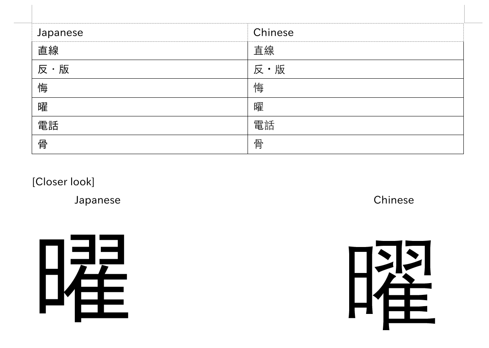

Are you using the right font?¶

By default, your computer / phone will display kanji in a Chinese font. Japanese kanji look slightly different, and it can be damaging if you learn the Chinese appearance of kanji rather than the Japanese ones.
Verifying if your browser is currently using a Japanese font
The one character that looks strikingly different between Japanese and Chinese fonts is 直 which is used in the word 直す (naosu) which means cure, heal, fix.


If your 直 looks like the second image, congrats! You are using a Japanese font, if not, change your font.
Windows 10¶
Win+I to open Settings > Apps > Optional features > Add a feature > Search "Japanese supplemental fonts" and Install
Advanced Users: Powershell
Japanese fonts can also be installed using Windows Powershell (Administrator):
Get-WindowsCapability -Online -Name Language.Fonts.Jpan~~~und-JPAN* | Add-WindowsCapability -Online
Also have Chinese supplemental fonts already installed?
You will need to set your locale to Japanese (Japan).
Setting Japanese locale
- Open the Run dialog box by pressing Win+R
- Type
intl.cpland press Enter - Click on the Administrative tab, go to Change system locale... and select Japanese (Japan) and click OK.
Now if you're using a Chromium based browser (e.g. Google Chrome, Brave), click the Menu > Settings > click on Appearance on the left > Customize fonts. Here's where you'll need to set your fonts.
Standard font: Meiryo UI
Serif font: Yu Mincho
Sans-serif font: Meiryo
Monospace: MS Gothic
If you're using Firefox it is already pre-configured.
macOS¶
You just need to add Japanese as a preferred language in System Preferences.
> System Preferences, then click Language & Region. Click General, then Add a language and choose Japanese 日本語
Linux¶
You should have ja_JP.UTF-8 as one of your locales. If not, uncomment the line #ja_JP.UTF-8 UTF-8 in /etc/locale.gen and run:
sudo locale-gen
Now install the package noto-fonts-cjk. It is available on the official Arch repositories.
Now create a fontconfig in ~/.config/fontconfig/conf.d for Japanese text. You can find an excellent example config file by tatsumoto-ren here.
If Chinese fonts persist in the browser you can force it. In any Chromium-based browser you can do that by doing:
> Settings > click on Appearance on the left > Customize fonts
Standard font: Noto Sans CJK JP Regular
Serif font: Noto Serif CJK JP Regular
Sans-serif font: Noto Sans CJK JP Regular
Android¶
Just add Japanese (it looks like this: 日本語) as a secondary language, it won't change your display language unless you move it to the top.

iOS¶
Adding the Japanese keyboard (kana or romaji whatever works) should do the trick.
Anki¶
I think Chinese font in Anki cards looks the worst as kana will be sans-serif and kanji will be serif AND out of proportion AND Chinese so it looks all out of place.

After you have installed Japanese fonts on your system it should automatically use Japanese fonts. If not, you will need to force it.
Forcing Japanese font in Anki¶
IPAex Gothic is a good sans-serif Japanese font I recommend for Anki. You can download it here
Install the font onto your system and reboot.
Windows: Double click and click Install
macOS: Drag the font into the Font Book
Linux: Move the file to ~/.local/share/fonts/ and then run fc-cache -f -v
Now in Anki click "Add" then click on "Cards" and then "Styling" and modify your font family accordingly.
.card {
font-family: IPAexGothic; /* here is where you set font */
}
You can also change the font by putting the font into the Anki collection.media directory.
Windows: C:\Users\<user>\AppData\Roaming\Anki2\(profile)\collection.media
macOS: ~/Library/Application Support/Anki2/(profile)/collection.media
Linux: ~/.local/share/Anki2/(profile)/collection.media
Android: /storage/emulated/0/AnkiDroid/collection.media
Now in Anki click "Add" then click on "Cards" and then "Styling" and modify your font family accordingly.
Don't copy exactly!
Just add what you don't already have.
.card {
font-family: CustomFont; /* here is where you set font */
@font-face {
font-family: CustomFont; src: url('ipaexg.ttf'); } /* here is where you define the font */
}
Preview:


Now also change your font for the Anki editor. Click on "Add" then "Fields" and change the Editing font of each field to any one of these (or any other font you know is a Japanese font)
IPAexGothic
Meiryo
MS Gothic
Yu Gothic
Hiragino Kaku Gothic Pro
Noto Sans CJK JP Regular
Yomichan¶
Yomichan's font should change according to your browser's font, but you can force Japanese font if not.
Using Popup CSS...
.kanji-link {
font-family: IPAexGothic;
}
.source-text {
font-family: IPAexGothic;
}
.gloss-content {
font-family: IPAexGothic;
}
.tag-label-content {
font-family: IPAexGothic;
}